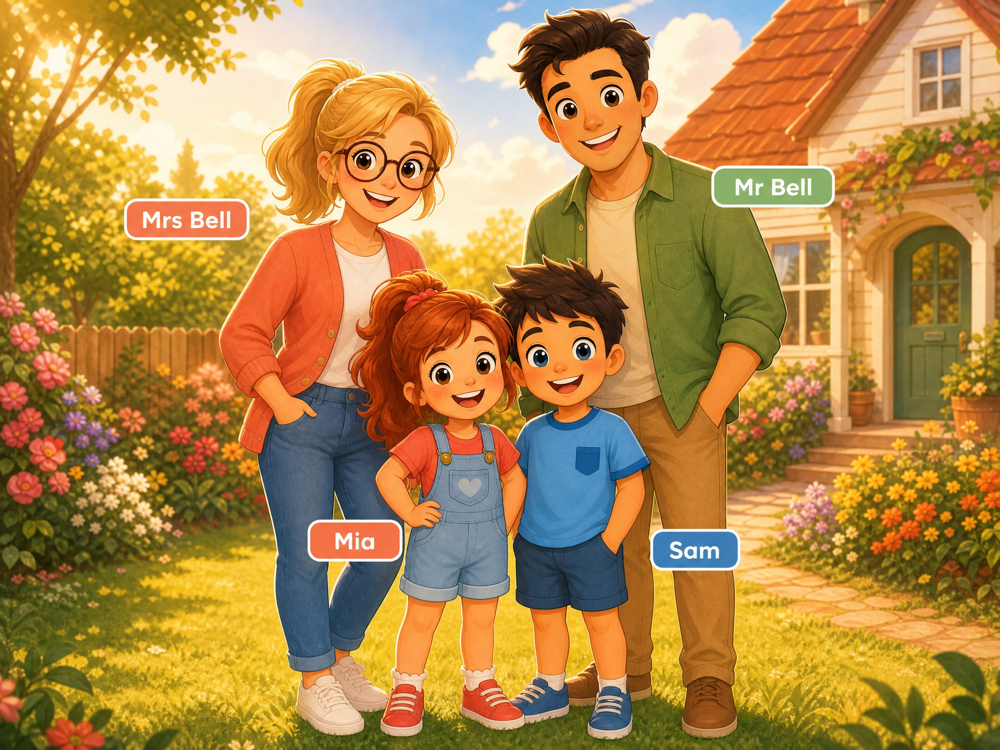
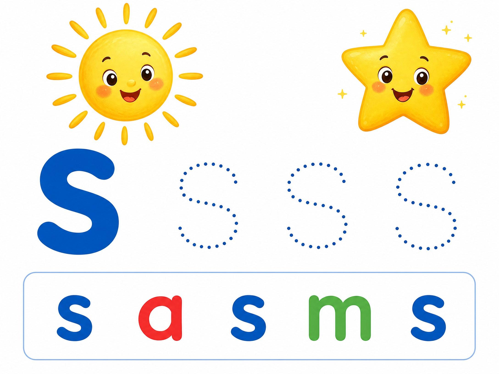
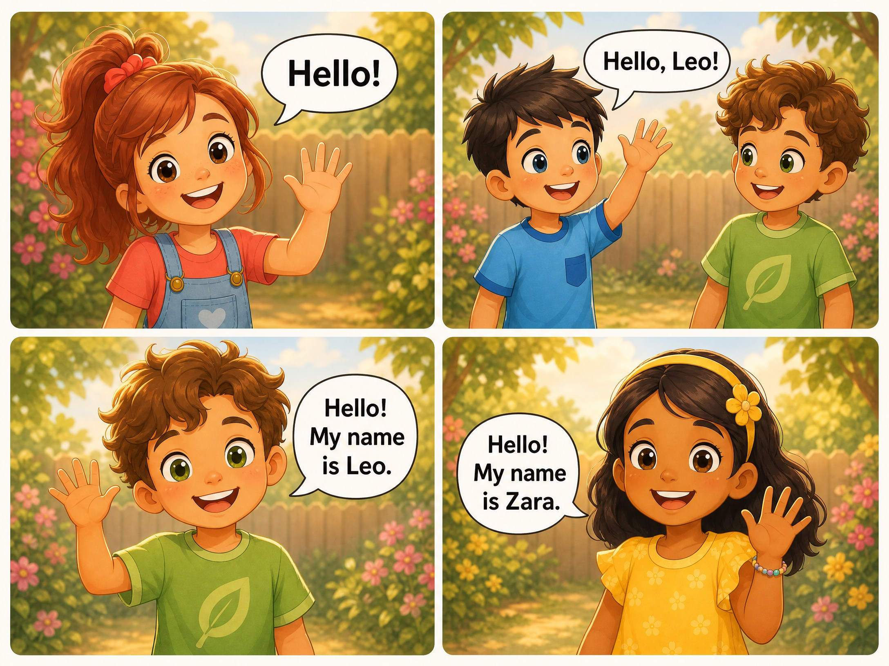
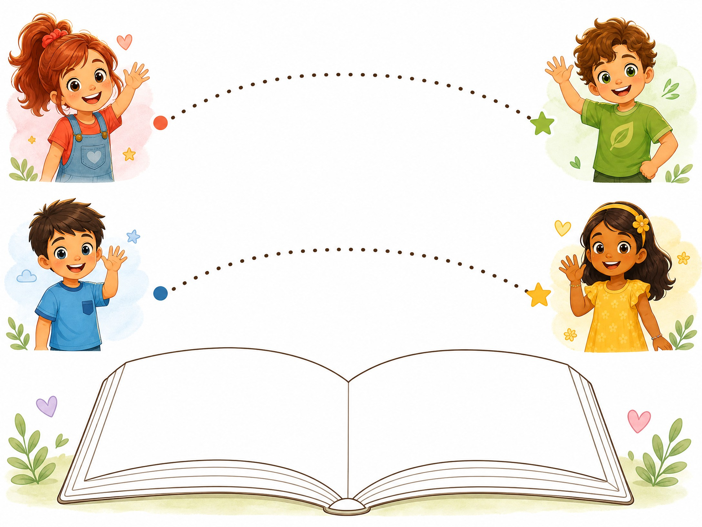

Outcome
Say hello and introduce yourself: “Hello. My name is …”
Learning experience and curriculum design for young English learners.
Bright Starts is a six-level English course for children. Unit 1 is designed for learners who may be new to English and still developing pencil control. Short cycles of listening, looking, speaking and movement give children more than one way to take part. Predictable routines, frequent retrieval and visual support help children move towards speaking, reading and writing. Australian English provides a consistent editorial and audio base while everyday classroom and play contexts remain broadly familiar.
The final Unit 1 Student Book sample contains ten print pages (pp. 4–13). The sequence moves from meeting the Bell family and friends to movement language, tracing, personal introductions, the letter s, a four-character story, song, a learner badge and a review game.
The learner can introduce themselves using “Hello. My name is …”. Student Book p. 8 models Mia and Sam, leaves a name line for the learner and invites them to draw their face. The original model is Track 05; p. 12 revisits the exchange on the learner’s English Badge.
Say hello and introduce yourself: “Hello. My name is …”
Student Book pp. 8 and 12: listen to Mia and Sam, say your name, trace Hello, then personalise an English Badge.
The learner says the name frame using their own name, then shares a personalised badge.
Explore the finished Student Book sample: ten illustrated print pages with page-specific learner exercises and artwork. Print a single page or the full book.
Open the complete Unit 1 learner sample →These full-size final illustrations sit in the page flow beside their matching learner prompts; they are not reduced to captions or displayed as unrelated thumbnails.




Review the final ten-page sequence, the original track-to-task mapping, print-ready learner activities and the final page artwork.
Open the Unit 1 evidence sheetThe final Student Book focuses on the lowercase /s/ sound. Page 9 pairs the model with tracing and a letter-choice task. The artwork includes three dotted s forms and the contrast letters a and m for a direct visual discrimination exercise.